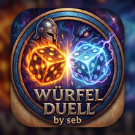

Tippe den Würfel. Sein Ergebnis wird deine Angriffszahl.
D6 würfeln
HIGH STAKES
Schaden riskieren?
1–3: −50 % · 4–6: +50 %
PERFECT 25
Perfect 25!
Exakt 25! Tippe den D6. 1–3 = kein Angriff. 4–6 = du darfst danach deine Angriffszahl mit einem D4 auswürfeln.
D6 würfeln
PERFECT 25 · STUFE 2
Angriffszahl!
Der D4 entscheidet jetzt, auf welche Zahl du angreifst.
D4 würfeln
INSURANCE
Schaden versichern?
5–6 = Eigenschaden halbiert
COUNTERATTACK
Gegenangriff!
Normaler 1er-Angriff: Treffer werden gelockt und die übrigen Würfel weitergewürfelt.
5 Würfel bereit
FÄHIGKEITS-BONUS
Zweitfähigkeit!
Wähle eine von zwei zufälligen Fähigkeiten. Diese bleibt bis zum Ende der Runde aktiv.
Tutorial
Willkommen bei DiceDuel
Training
Was willst du starten?
Das normale Tutorial erklärt die Grundregeln. Die Testumgebung ist unser Spiel-Labor und beeinflusst keinerlei Fortschritt.
🧪 Testumgebung
Wähle 2 Fähigkeiten
Du startest mit 25 HP und zwei frei gewählten Fähigkeiten. Der leichte Bot hat keine Fähigkeit und 100 HP. In dieser Partie würfeln alle Würfel ausschließlich 5 oder 6.
0 / 2 gewählt
Partie verlassen
Spiel wirklich verlassen?
Die aktuelle Partie wird beendet und du kehrst zum passenden Menü zurück. Dein gespeicherter Fortschritt bleibt erhalten; der laufende Kampf wird verworfen.
Kampagne
Wie viele gegen den Tisch?

DICEDUEL
Push your luck. Kill your friends.
☁️ DiceDuel Account
Account- und Cloud-Save-Vorbereitung. Aktuell läuft nur ein lokales Test-Backend; Firebase wird später hinter dieselbe Schnittstelle gehängt.
BackendLOCAL MOCK · Firebase noch nicht verbunden
Account erstellen
Login
Angemeldet als–
LOCAL SAVE––
⇄
CLOUD SAVENoch keiner–
Auto-Sync bleibt bis Firebase deaktiviert. Dieser Screen testet nur Login-, Save- und Konflikt-Flow.
🌐 Online BETA
2–4 Spieler über Firebase. Lobby, Matchstart und der komplette Fight laufen host-autoritär; alle Geräte sehen denselben Würfel-, HP-, Fähigkeits- und Zugzustand live.
Firebase verbindet …
Profil wählen
Dein lokales DiceDuel-Profil liefert Name, Battletag, Würfeldesign und Profilkosmetik. Sitzplätze werden online nicht abgefragt.
Online-Lobby
Erstelle einen Raum für 2–4 Spieler oder tritt mit einem 6-stelligen Code bei.
oder
Raumcode
------
🗺️ Solo-Kampagne
Ein Profil kämpft sich durch mehrere Welten mit festen Encountern. Fähigkeiten werden schrittweise freigeschaltet; spätere Welten testen Builds, Risiko, Zielwahl und Fähigkeits-Meisterung.
Profil
–
Fortschritt
0 / 5
Prestige
🏆 0
Mastery⭐ 0 XP · ◆ 0 frei
Kampagnen-Fähigkeiten
🤝 Duo-Kampagne
Zwei echte Spielerprofile kämpfen gemeinsam durch mehrere Duo-Welten. In Duo sind alle regulären Hauptfähigkeiten direkt verfügbar; beide wählen ihre eigene aktive Fähigkeit. Zweitfähigkeits-Drafts nutzen ebenfalls den kompletten Pool inklusive Glück (BETA). Erfolgreiche Clears bringen beiden Profilen Trophäen. Der Fortschritt gehört genau dieser Profil-Paarung.
Team
2 Profile erforderlich
Fortschritt
0 / 5 Encounter
Freischaltung
🔒 Solo Encounter 10
Duo Mastery⭐ –
💪 Trio-Kampagne
Drei echte Spielerprofile gegen koordinierte Gegnerteams. 15 Encounter testen Rollen, Fokus-Pässe, gemeinsame Builds und Bossmechaniken. Alle regulären Hauptfähigkeiten sind verfügbar; der Fortschritt gehört genau dieser Dreiergruppe.
🧪 Trinity Protocol: Fähigkeitskombos, Angriffsmuster, Heilung und koordinierte Finisher.
Team
3 Profile erforderlich
Fortschritt
0 / 5 Encounter
Belohnung
🏆 Erstclear
Trio Mastery⭐ –
👑 Trophy Shop
Prestige-Trophäen werden nur für Cosmetics ausgegeben. Keine gekaufte Belohnung verändert Schaden, HP oder Würfelchancen.
Verfügbar🏆 0
👤 Spielerprofile
Profile tragen Battletag, Würfel-Unlocks, Achievements und Langzeitstatistiken. Der Battletag bleibt auch nach einer Umbenennung gleich.
🏆 Achievements
Einige Achievements schalten Würfeldesigns frei. Darunter siehst du, welche lokalen Profile sie bereits geschafft haben.
📊 Statistiken
Persistente Statistiken abgeschlossener Runden deiner lokalen Spielerprofile. Bots werden nicht in die Langzeitdaten eingerechnet.
👤 Spielerprofile
⚡ Fähigkeiten
⚙ Einstellungen
Diese Einstellungen werden zusammen mit Profilen, Kampagnenfortschritt, Achievements und Statistiken lokal auf diesem Gerät gespeichert.
Würfelanimationen
Normal oder schneller für flottere Runden.
Bot-Geschwindigkeit
Ändert nur die Denkpausen, nicht die Schwierigkeit.
Sprache
Wähle die Sprache der Benutzeroberfläche.
💾 Lokaler Speicher: Profile, Kampagnenfortschritt, Achievements, Trophäen und Statistiken liegen ausschließlich lokal in diesem Browser. Save-Import und -Export sind deaktiviert, damit Progression nicht über manipulierte Save-Dateien eingeschleust werden kann.
📖 Regeln
Die Kurzfassung für eine schnelle Runde.
🎲 Basiswurf
Du spielst mit 5W6. Nach jedem Wurf lockst du mindestens einen Würfel und würfelst den Rest weiter, bis alle fünf feststehen.
❤️ Unter 25
Endsumme unter 25: Du verlierst die Differenz zu 25 als HP.
⚔ Über 25
26 greift auf 1er an, 27 auf 2er, 28 auf 3er, 29 auf 4er und 30 auf 5er. Fähigkeiten können diese Regeln verändern.
🎯 Angriff
Treffer werden automatisch gelockt. Die übrigen Würfel werden weitergewürfelt. Ein Wurf ohne neuen Treffer beendet den Angriff.
⚡ Fähigkeiten
Classic: Zu Rundenbeginn wird eine Fähigkeit mit W25 bestimmt. Bei 12 HP oder weniger bekommst du einmal pro Runde eine Auswahl aus zwei Zweitfähigkeiten.
🛡️ Endurance · 50 HP
Nur lokal, 2–4 Menschen, keine Bots. Jeder startet mit 2 unterschiedlichen zufälligen Fähigkeiten. Bei 30 HP oder weniger wählst du eine 3. Fähigkeit aus zwei zufälligen Optionen. Der Letztplatzierte darf zwischen Runden beide Startfähigkeiten frei wählen.
🔥 Overload · 75 HP
Nur lokal, 2–4 Menschen, keine Bots. Jeder startet mit 3 unterschiedlichen zufälligen Fähigkeiten. Keine zusätzliche HP-Fähigkeit. Der Letztplatzierte darf zwischen Runden genau 1 Fähigkeit frei wählen; die anderen 2 bleiben zufällig.
🏆 Sieg
Ausgeschiedene Spieler werden übersprungen. Der letzte lebende Spieler gewinnt die Runde.
⚡ Alle Fähigkeiten
Der komplette aktuelle W25-Pool inklusive Freie Wahl.
📝 Changelog
Die großen Versionssprünge, ohne jeden Mini-Hotfix.
V28.0.1
UI-Hotfix: Button-Eingaben reagieren wieder zuverlässig
Ability-Picker überwacht nur noch neu erzeugte Ability-Selects statt globale UI-Attribute
Startfähigkeitswahl bleibt kompakt: nur Nummer + Name, keine Beschreibung
V28.0.0
Erster kompletter Bright-Arcane-Premium-UI-Pass: Elfenbein, Navy und Gold als neue DiceDuel-Designsprache
Hauptmenü, Setup, Campaign, Kampf, Mastery und zentrale Dialoge visuell vereinheitlicht
Kampf bleibt bewusst dunkler als die Menüs, damit Würfel, aktive Spieler und Attack-FX der Fokus bleiben
Freie Startfähigkeitswahl nutzt jetzt einen eigenen DiceDuel-Picker statt des nativen Android-Select-Menüs
Fähigkeits-Picker zeigt bewusst nur Nummer und Name – keine Beschreibung
Gameplay-, Campaign- und Save-Logik unverändert
V27.11.0
Account-/Cloud-Save-Grundlage für die Web-Version vorbereitet
Neuer Account-Screen mit Register, Login, Logout und Local-vs-Cloud-Save-Vergleich
Aktuell ausschließlich lokales Mock-Backend; keine echten Firebase-Calls und keine Passwörter werden an einen Server übertragen
Backend-Schnittstelle ist austauschbar, damit später Firebase Auth + Cloud Save ohne Umbau der Game-Logik angeschlossen werden kann
Account-Menü bleibt in file://-Builds wie der aktuellen APK automatisch verborgen
V27.11.0
Solo W4L15 Abyss Throne deutlich entschärft: Abyss King 50 HP, Exarch Red 22 HP, Exarch Pale 20 HP, Exarch Black 22 HP
Ingame-Verlassen nutzt jetzt zentral eine Bestätigung: „Spiel wirklich verlassen?“
Der Schutz gilt für alle Modi, die während eines aktiven Matches ins Hauptmenü wechseln wollen
Bestätigtes Verlassen kehrt wie bisher zum passenden Campaign-/Setup-/Hauptmenü zurück
V27.11.0
Boss-Mastery-XP erhöht: Solo ab Welt 3 und Duo ab Welt 2 geben Level 10/15 nun 200 XP beim Erstclear und 50 XP bei Wiederholung
Normale XP-berechtigte Encounter bleiben bei 100 XP Erstclear / 20 XP Repeat
Campaign-XP-Badges und Detailanzeige zeigen automatisch die neuen Boss-Werte
Retro-XP V4: bereits abgeschlossene berechtigte Boss-Level erhalten einmalig +100 XP je Boss nachgebucht
Vorhandene XP werden nicht reduziert; Wiederholungs-XP werden nicht rückwirkend erfunden
V27.11.0
Campaign-Level zeigen jetzt direkt ihre Mastery-XP-Belohnung: +100 XP beim Erstclear, +20 XP bei Wiederholungen
Solo zeigt XP pro Profil; Duo/Trio kennzeichnen die XP als Belohnung je Profil
Nur Encounter mit aktivem Mastery-XP-Gate zeigen eine XP-Belohnung
L2-Unlock-Popup nennt jetzt die konkrete Fähigkeit, z. B. „Glückswurf L2 unlocked!“
V27.11.0
L2-Challenge-Fortschritt startet pro Fähigkeit erst nach Kauf der jeweiligen L1-Mastery
Vor L1 wird auch kein versteckter Zwischenfortschritt vorgemerkt
Solo-L2-Challenges zählen ab Welt 3+
Duo-L2-Challenges zählen ab Welt 2+
Trio bleibt unverändert
V27.11.0
L2-Mastery-Challenges zählen in Solo und Duo ausschließlich ab Welt 3
Events aus Welt 1/2 erhöhen weder kumulative Counter noch erfüllen einmalige L2-Challenges
Trio bleibt unverändert, da die Trio-Kampagne keine Weltstruktur besitzt
V27.11.0
Ability Mastery L2 vollständig aktiviert: alle 24 finalisierten L2-Effekte sind spielbar
Jede Fähigkeit besitzt jetzt ihre handgefertigte L2-Mastery-Challenge; erfüllte Challenge schaltet den 500-XP-L2-Kauf frei
Kumulative L2-Challenges werden pro Profil und Campaign-Modus separat gespeichert
Ability-Mastery-Layout überarbeitet: L1 und L2 stehen pro Fähigkeit direkt nebeneinander
Campaign-Fortschritt: nach einem erfolgreichen Erstclear wird auf der Campaign-Map wieder automatisch der nächste offene Encounter ausgewählt
Solo und Duo springen dabei auch sauber in die nächste freigeschaltete Welt
Fusion-Nodes bleiben weiterhin Platzhalter
V27.11.0
Mastery-State-Rootfix: ensure() ersetzt bestehende Mode-Objekte nicht mehr bei jedem Aufruf
Mastery-States werden jetzt in-place normalisiert, wodurch Referenzen beim Kauf stabil bleiben
Ability-Käufe verlieren ihre XP-/Level-Änderungen nicht mehr durch verschachtelte ensure()-Aufrufe
Behebt exakt den Fall: Confirm-Popup schließt, aber XP und Node bleiben unverändert
V27.11.0
Mastery-Kaufpfad komplett neu verdrahtet: zentraler Event-Delegation-Handler statt dynamischer Button-Callbacks
Kaufdaten liegen direkt als JSON am Bestätigungs-Popup und werden beim Klick auf „Kaufen“ ausgelesen
Ability- und Standard-Mastery-Käufe laufen über denselben zentralen Executor
Abbrechen/Tap auf Overlay verwirft den Kauf; Kaufdaten werden danach gelöscht
V27.11.0
Mastery-Kauf: Profil-ID-Typfehler behoben
Profil-IDs werden beim Kauf nicht mehr zwangsweise in Strings umgewandelt
Neue robuste Profilauflösung akzeptiert String- und Number-IDs
Kaufauftrag behält jetzt exakt die originale Profil-ID aus dem aktiven Mastery-Profil
V27.11.0
Mastery-Kaufbestätigung repariert: „Kaufen“ führt jetzt einen stabilen Kaufauftrag mit festem Profil, Modus, Node und Preis aus
Keine stillen Abbrüche mehr durch erneute UI-/Screen-Prüfungen nach dem Bestätigen
Ability- und Standard-Mastery-Käufe speichern sofort und rendern XP/Node-Status neu
Bei ungültigem oder inzwischen unbezahlbarem Kauf erscheint eine sichtbare Meldung statt eines wirkungslosen Buttons
V27.11.0
Ability-Mastery: freigeschaltete/kaufbare Nodes sind wieder zuverlässig anklickbar
Gemeinsame Node-Geometrie verhindert, dass unlocked Nodes außerhalb ihrer sichtbaren Hitbox liegen
Jeder XP-Kauf benötigt jetzt eine ausdrückliche Bestätigung
Bestätigungsfenster zeigt Upgrade, Kosten, aktuelles XP-Guthaben und Rest-XP
Auch Standard-Mastery-Käufe nutzen die Bestätigung und können nicht mehr versehentlich beim Scrollen ausgelöst werden
Mastery-Infotext zeigt die aktuellen XP-Gates W2L10 / W1L10 / Trio L1 korrekt an
V27.11.0
Gesamtpaket enthält vollständig V27.9.2: frühe Standard-Mastery und alle L1-Ability-Upgrades
Solo-Mastery-XP gibt es jetzt bereits ab W2L10 statt erst ab Welt 3
Duo-Mastery-XP gibt es jetzt bereits ab W1L10 statt erst ab Welt 2
Trio-Mastery-XP bleibt ab Level 1 aktiv
Retro-XP V3 rechnet Solo W2L10+, Duo W1L10+ und Trio L1+ einmalig mit 100 XP pro abgeschlossenem Encounter nach
V27.11.0
Standard-Mastery früher: Solo ab Abschluss W2L10, Duo ab Abschluss W1L10, Trio weiterhin ab Level 1
XP-Farming-Gates unverändert: Solo W3+, Duo W2+, Trio L1+
Alle 24 L1-Ability-Masteries werden in echter Ability-ID-Reihenfolge einzeln durch Campaign-Clears freigeschaltet
Solo startet W2L10 mit Brutale Einsen, W2L11 Lifesteal; Duo startet W1L10 mit Brutale Einsen, W1L11 Lifesteal
Freigeschaltete L1-Nodes kosten 300 XP und sind jetzt kaufbar; Besitz wird separat pro Profil und Solo/Duo-Mastery gespeichert
Alle finalisierten L1-Effekte sind im Campaign-Kampf aktiv; L2/Fusion/Keystone bleiben gesperrt
Duo-/Trio-Retro-XP liest jetzt den tatsächlichen Team-Fortschritt aus saveData.duoCampaigns / trioCampaigns und korrigiert die V27.9.1-Nachbuchung einmalig
V27.9.1
Duo-Mastery-XP werden für bereits abgeschlossene Duo-Welt-2+-Encounter einmalig rückwirkend gutgeschrieben
Trio-Mastery-XP werden für alle bereits abgeschlossenen Trio-Encounter einmalig rückwirkend gutgeschrieben
Retro-Baseline: 100 XP pro bereits abgeschlossenem berechtigtem Encounter
Bereits vorhandene Duo-/Trio-XP werden nicht überschrieben oder doppelt vergeben
Solo-Retro-Migration bleibt unverändert
V27.9.1
Multi-Campaign Mastery: Solo, Duo und Trio besitzen getrennte XP- und Standard-Mastery-Konten pro Profil
Solo-XP ab Welt 3, Duo-XP ab Welt 2, Trio-XP ab Level 1
HP-, Force- und Awakening-Upgrades werden je Modus separat gekauft und wirken nur im passenden Campaign-Modus
Duo- und Trio-Mastery können direkt aus ihren Campaign-Menüs geöffnet werden; bei mehreren Spielern lässt sich das Profil im Mastery-Popup wechseln
Kompletter finalisierter Ability-Mastery-Sheet ins echte Mastery-Menü übernommen; alle Ability-Nodes bleiben vorerst gesperrt
Fusionen bleiben sichtbare ???-Platzhalter; Unlock-Regeln folgen später
Bestehender V27.8-Solo-Mastery-Stand wird automatisch in das neue Solo-Konto migriert
V27.9.1
Duo-Campaign-Hotfix: Encounter-Start funktionierte wegen eines versehentlich eingeschleusten Mastery-HP-Aufrufs mit undefiniertem Profil nicht mehr
Campaign Mastery bleibt wie vorgesehen ausschließlich Solo Welt 3+
Duo- und Trio-Start-HP werden wieder ausschließlich aus ihren Encounter-Daten gelesen
V27.9.1
Ability-Mastery-Testtree für Mobile verkleinert: kein horizontaler Scroll mehr nötig
Linker und rechter Ast tragen jetzt klare Überschriften „Fähigkeit X“
Nodes und Fusion-Orbs kompakter skaliert, Pfade entsprechend angepasst
Jeder Ability- und Fusion-Node ist anklickbar und öffnet ein kleines Upgradebeschreibungs-Popup
Weiterhin reiner Testumgebungs-Prototyp ohne Save oder echte Ability-Effekte
V27.9.1
Testumgebung: visueller Ability-Mastery-Fusion-Tree als isolierter Prototyp
Sechs nummerierte Ability-Äste mit Level-1- und Level-2-Nodes
Je zwei voll ausgebaute Äste laufen sichtbar in einen großen 1000-XP-Fusion-Node zusammen
Nur Darstellung: keine Effekte, keine Unlocks und keine Save-Daten
V27.9.1
Mastery-Skilltree visuell komplett neu gebaut
Echte 3D-artige Orb-Nodes mit Tiefe, Highlights, Schatten und Verbindungspfaden
Nodes werden leicht versetzt entlang eines zentralen Skilltree-Stamms angeordnet
Aktive, kaufbare und gesperrte Stufen sind jetzt klar unterscheidbar und vollständig lesbar
Vitality, Force und Awakening besitzen eigene visuelle Farbakzente
Mobile-Layout speziell für schmale Displays angepasst
V27.9.1
Mastery-Punktesystem entfernt: XP ist jetzt direkt die Währung
Perkstufen kosten progressiv 100 / 200 / 300 / 400 / 500 XP je nach Stufe
Jeder Erstclear ab Welt 3 gibt 100 XP; Wiederholungen geben 20 XP
Welt 3 vollständig abgeschlossen entspricht damit exakt 1500 XP Erstclear-Fortschritt
Bestehende W3+-Clears werden einmalig auf den neuen 100-XP-Baseline-Wert hochgerechnet
Bereits gekaufte Mastery-Stufen bleiben erhalten und ihre neuen XP-Kosten werden bei der Migration abgezogen
V27.9.1
Mastery-Hotfix auf dem tatsächlich ausgelieferten Build neu aufgebaut
Vitality wird beim Solo-Encounter-Start wieder korrekt auf Start- und Max-HP angewendet
Karten-Node ist jetzt die einzige Quelle für den zu startenden Solo-Encounter
Stale Encounter-Kontext aus verlassenen Kämpfen wird beim Zurückkehren nicht mehr weitergereicht
Volatiler Solo-Fight-State wird beim Verlassen vollständig zurückgesetzt
V27.9.1
Campaign-State-Hotfix: beim Verlassen eines Solo-Encounters wird alter Fight-/Round-State vollständig verworfen
Encounter-Start verwendet ausschließlich das aktuell auf der Kampagnenkarte ausgewählte Level
Generischer Local-Next-Round-Reset ist in Solo-Campaign blockiert, damit HP/Fähigkeiten nicht auf Classic 25 HP zurückfallen
Mastery-Vitality-Start-HP werden als Campaign-Startwert am Helden gespeichert
Retroaktive Mastery-XP-Migration wird direkt gespeichert
V27.9.1
Mastery-UI überarbeitet: kompakte XP-Anzeige und kleiner Mastery-Button nebeneinander
Mastery öffnet jetzt als echtes Overlay-Popup statt im Kampagnen-Flow
Bestehender Welt-3+-Fortschritt wird einmalig rückwirkend als Mastery-XP anerkannt
V27.9.1
Campaign Mastery: Profilprogression ab Solo Welt 3
Neue Mastery-XP-Anzeige neben dem Prestige-Counter und eigenes Skilltree-Menü
Vitality-Zweig: +2 / +4 / +6 Start- und Max-HP
Force-Zweig: +1 / +2 / +3 Gesamtschaden pro abgeschlossenem Angriff, nicht pro Treffer
Awakening-Zweig: Bonus-Fähigkeit bei 16 / 17 / 18 / 19 / 20 HP statt 15 HP
100 XP ergeben einen Mastery-Punkt; W3+ Challenge-Clears geben XP, Bosse mehr
V27.9.1
Solo W3L6 · Marked Man: Präzision startet zusätzlich fest als 2. Fähigkeit
Test-Lab 3D Dice: unsichtbare hohe Physik-Wände verhindern, dass ein Würfel das Tray verlassen kann
Solver verwirft zusätzlich jede Trajektorie, die den sicheren Innenbereich verlässt
Tatsächliche Endpositionen bereits gelöster Würfel werden als Mindestabstand für die nächsten Würfel berücksichtigt
Bot-/Script-Aktionen werden während Solver und sichtbarer 3D-Trajektorie im Test-Lab gebremst
Main Game bleibt unverändert
V27.9.1
Test-Lab 3D Dice: neu im aktuellen Angriff automatisch gelockte Treffer werden trotzdem vollständig auf ihren neuen Wert animiert
Bereits vor dem Wurf gelockte Würfel bleiben weiterhin liegen und werden nicht erneut animiert
Randomisierte überlappende Landing-Zones reduzieren Würfel-Überlappungen, ohne wie feste Parkpositionen auszusehen
Solver bewertet Kandidaten zusätzlich nach Abstand zum zufälligen Landebereich
Unsichtbare Touch-Hitboxen der 3D-Würfel vergrößert, sichtbare Würfelgröße bleibt unverändert
Main Game bleibt unverändert
V27.9.1
Test-Lab Physics Dice Solver V3: jeder nicht gelockte Würfel wird separat physisch auf seinen Zielwert gelöst
Die komplette cannon-es-Bewegung wird als Trajektorie aufgezeichnet und exakt abgespielt; dadurch kein Replay-Drift mehr
Neue Würfe brechen laufende Solver-Jobs ab und ersetzen sie sofort, statt verschluckt zu werden
Gelockte Würfel bleiben unverändert liegen und werden beim nächsten Solver-Durchgang übersprungen
Diagnose-Button zeigt sichtbare obere Seite / tatsächlichen Spielwert für alle fünf Würfel
Main Game, Save, Campaign und Online bleiben unverändert
V27.9.1
Test-Lab Physics Dice: deutlich mehr X/Z-Spin für ca. 2–3 sichtbare Überschläge pro Wurf
Würfel starten etwas höher und mit mehr seitlichem/forward Impuls statt fast gerade herunterzufallen
Precompute-Suche auf bis zu 72 Seeds und längere Settle-Simulation erhöht, damit trotz stärkerem Tumbling weiterhin nur korrekte Endwerte gezeigt werden
Main Game bleibt unverändert
V27.9.1
Test-Lab Physics Dice V2: Spiel bestimmt zuerst das Ergebnis, danach sucht cannon-es unsichtbar passende physische Startbedingungen
Sichtbar wird nur ein vorher validierter Physik-Seed abgespielt; künstlicher End-Snap entfernt
Physischer Safe-Throw als Fallback statt nachträglicher Rotation
3D-Würfel ca. 15 % kleiner für mehr Luft im Tray
Direkte Test-Lab-Buttons für Auswahl locken und alle Locks lösen
Main Game, Save, Campaign und Online bleiben unverändert
V27.9.1
Testumgebung: erster echter 3D Physics Dice Tray Prototyp mit Three.js + cannon-es
Die 3D-Würfel spiegeln immer das bereits bestimmte DiceDuel-Ergebnis; Physik verändert niemals RNG oder Spielregeln
3D-Würfel können direkt angeklickt und über den normalen Lock-Button gesperrt werden
Würfeldesign der Testumgebung wird live auf das 3D-Material übertragen; Main Game bleibt unverändert
V27.9.1
FX-Hotfix: fehlende Canvas-Farbpalette ergänzt; Arc Shot und alle neuen Main-Game-Attack-FX rendern wieder korrekt
Getesteten organischen Hot-Dice-Flammenrenderer aus dem Test-Lab ins Main Game übernommen
Alten starken Hot-Dice-Glow auf den zurückhaltenden Lab-Look reduziert
Test-Lab bleibt von der globalen Hot-Dice-Canvas ausgeschlossen, damit dort keine Effekte doppelt laufen
V27.9.1
Premium Attack-FX aus der Testumgebung ins Main Game übernommen
Hellfire, Venom, Blood Slash, Royal Burst, Void Rift, Confetti Cannon, Frost Lance, Rift Tear und Crownfall nutzen jetzt die neuen Canvas-Animationen
Attack-FX besitzen gekoppelte Kill-/Execution-FX mit individuellen WebAudio-Kill-Stingern
Kill-FX werden bei normalen Angriffen, Counterattack und tödlichem Ricochet automatisch ausgelöst
Save- und Campaign-Datenstrukturen bleiben unverändert
V27.9.1
Test-Lab FX Pass 4: Hellfire mit echter Flammenspur statt einfacher Projektilform
Venom erhält eine hängende Giftspur; Blood Slash wird zu drei unregelmäßigen Wolverine-Kratzern
Royal Burst und Void Rift deutlich größer; Confetti Cannon ohne langweiligen weißen Leitstrahl
Frost Lance ist jetzt ein echter langer Eisspeer mit Splitter-Impact
Rift Tear und Crownfall bleiben unverändert; Main Game weiterhin unangetastet
V27.9.1
Test-Lab Attack-FX: individuelle Impact-Effekte mit Flash, Shockwave, Sparks und Shards
Crownfall erhält einen deutlich stärkeren Einschlag mit Doppel-Schockwelle
Hot Dice: organischere gekrümmte Double-Tongue-Flammen statt dreieckiger Silhouetten
Main Game bleibt unverändert; alle Änderungen ausschließlich im Test-Lab
V27.9.1
Test-Lab Hot Dice neu gerendert: deutlich weniger Partikel, transparente rote Farbverläufe und längliche Flammen statt Bubble-Wand
Würfel bleiben auch bei Streak 5+ klar sichtbar
Attack-FX im Test-Lab besitzen jetzt unterschiedliche Animationsformen statt nur andere Farben
Main Game bleibt unverändert; neue Renderer laufen ausschließlich in der Testumgebung
V27.9.1
Testumgebung: neue Live-FX-Werkbank für Würfeldesign, Attack-FX, Rahmen und Bannerfarbe
Hot Dice im Test-Lab mit neuem Canvas-Partikel-Feuer und mehrstufiger roter Hitze
Hot-Dice-Stufen 3/4/5 und Attack-FX können während des Kampfes direkt vorgespielt werden
Alle Änderungen bleiben strikt auf die Testumgebung begrenzt; kein Save und keine Main-Game-Mechanik geändert
V27.9.1
Save Safety Net: drei rotierende Backups der letzten drei Spielversionen
Snapshots werden nur beim Versionswechsel erstellt, nicht bei jedem normalen Speichern
Fehlender oder beschädigter Hauptsave wird automatisch aus dem neuesten gültigen Snapshot wiederhergestellt
Vollständiger Speicher-Reset löscht Hauptsave und Backups bewusst gemeinsam
V27.9.1
PROFIL-RECOVERY: versehentlich älteren js/15-app.js aus V27.6.4 zurückgenommen
Letzten stabilen App-Stand wiederhergestellt; Save-Key und Save-Schema bleiben unverändert
Save Import/Export gezielt aus dem aktuellen App-Stand entfernt
Testumgebung bleibt separat erhalten
V27.9.1
Mischbuild-Fix: alter hart codierter V27.5.3-Integrity-Check entfernt
Der Checker liest die erwartete Version jetzt aus einem HTML-Build-Marker
Hot Dice aus V27.6.2 bleibt unverändert
V27.9.1
Firebase-Diagnose: Anonymous-Auth zeigt jetzt den echten Firebase-Fehlercode und die Fehlermeldung direkt im Online-Screen
Diagnose speichert zusätzlich Hostname, Protokoll, Online-Status, Auth-Domain und Projekt-ID unter window.__WD_FIREBASE_DIAG__
Kurze Netzwerk-/Internal-Fehler erhalten genau einen kontrollierten Auth-Retry nach 1,8 Sekunden
Alle CSS-/JS-Asset-Keys auf 27.9.1 gesetzt, um mobile Cache-Mischbuilds auszuschließen
V27.6.0
Online-Modi: Classic 25 HP, Endurance 50 HP und Overload 75 HP
Endurance startet mit 2 Fähigkeiten, Overload mit 3 Fähigkeiten
Secret-/Chain-Achievement-Grundlage: geheime Beschreibungen werden erst nach Unlock sichtbar
Achievement Showcase: bis zu 3 freigeschaltete Achievements pro Profil anpinnbar
Cosmetic Randomizer für Würfel und Angriffseffekte
Hot Dice: erfolgreiche Angriffsmomente bekommen einen rein visuellen Glüh-/Feuer-Layer
Match-Endscreen mit automatischen Awards erweitert
V27.5.3
Cache-Recovery-Build: alle CSS-/JS-Asset-Keys neu auf 27.5.3 gesetzt, damit kein alter 27.5.x-Mischbuild hängen bleibt
Build-Integrity-Check erkennt sofort, wenn Config, Achievement-Daten oder Attack-FX nicht aus derselben Version geladen wurden
Feature-Inhalt entspricht V27.5.1: neue Achievements und profilgebundene Angriffseffekte vollständig enthalten
V27.5.1
17 neue Achievements mit echten Triggern für Straight, Counterattack, Momentum, Loaded Dice, Insurance, Lifesteal, Ricochet, Perfect 25 und Poker-Muster
Sieben Effekte werden über Achievements freigeschaltet; Frost Lance, Rift Tear und Crownfall sind neue Trophy-Shop-Rewards
Angriffseffekt ist im Profil frei zwischen allen freigeschalteten Effekten wählbar und wird in Online-Lobbys/Matches mit synchronisiert
GalaxyA50-Kompatibilitätsmodus reduziert bei den neuen FX Partikel und schwere Filter, ohne den Effekt komplett zu entfernen
V27.5.0
Online-Lobbys und host-autoritärer Fight auf 2–4 Spieler erweitert; Host wählt die Lobbygröße vor dem Erstellen
Neue Achievements: Dumbass, Full Send, Machine, Laser Guided, Technically A Win und Party Crasher
Machine, Laser Guided und Party Crasher schalten Chrome-, Storm- und Circuit-Würfel frei
Neue Kampf-FX: Laser-/Blitz-Projektil vom Angreifer zum Ziel mit Einschlag; Counterattack und Ricochet besitzen eigene Varianten
Online-Achievement-Unlocks werden zum jeweiligen Besitzer gespiegelt und dort im lokalen Profil gespeichert
V27.4.4
Online-Matchende mit drei sauberen Optionen: Noch ein Spiel, Zur Lobby oder Hauptmenü
Rematch startet erst, wenn beide Spieler zugestimmt haben; danach beginnt automatisch ein frisches synchrones Match im selben Raum
Zur Lobby setzt beide Spieler gemeinsam zurück und entfernt den alten Match-State; Hauptmenü verlässt den Online-Raum sauber
V27.4.3
Online-Würfel drehen auf Spiegelclients durchgehend bis der autoritative Endwert eintrifft; die kurze Pause vor dem Ergebnis entfällt
Beim Einsetzen des Firebase-Endwerts wird die 3D-Settle-Transition unterdrückt, damit kein zweiter Mini-Dreh mehr entsteht
Alle CSS/JS-Assets erhalten einen neuen V27.4.3-Cache-Key, damit GitHub Pages und mobile Browser garantiert denselben Online-Build laden
V27.4.2
Online-Action-Pipeline für High Stakes, Perfect 25 und Counterattack stabilisiert
Gast-Aktionen nutzen eigene Firebase-Knoten; Host-Folgeaktionen können schon laufen, während ältere States im Hintergrund veröffentlicht werden
V27.4.1
Online Host-Control-Fix: Nach Locken und anderen sofortigen Host-Aktionen bleiben neu erzeugte Folgebuttons korrekt bedienbar
Host-Pending blockiert weiterhin doppelte Aktionen logisch, setzt die von der Battle-Engine berechneten Controls aber nicht mehr dauerhaft auf disabled
V27.4.0
Smooth Online Core: Host-Aktionen starten lokal sofort ohne Firebase-Roundtrip
Gast-Würfe starten die Animation sofort lokal; der autoritative Endzustand kommt anschließend vom Host
Match-State, Actions und Visual-Events laufen auf getrennten Firebase-Pfaden statt über den kompletten Raum-Snapshot
Würfelauswahl im Basiswurf ist lokal ohne Netzwerkverzögerung; Lock und Loaded Dice übertragen die Auswahl gesammelt
Host-Firebase-Echos werden nicht mehr erneut gerendert; deutlich weniger DOM-Arbeit pro Online-Aktion
State-Snapshots wurden verkleinert und Log-Historie begrenzt; Firebase überträgt pro Zug weniger Daten
Realtime-Verbindung wird über .info/connected überwacht; bei Verbindungsverlust wird der Fight eingefroren statt lokal auseinanderzulaufen
V27.3.0
Online 1v1 Fight Beta: komplette Zugmechanik läuft host-autoritativ über Firebase
Basiswurf, Würfelauswahl/Locken, Restwurf, Angriffe, Schaden und Rundenwechsel werden live synchronisiert
Aktive Fähigkeiten inklusive Glückswurf, Zweite Chance, Loaded Dice, Snake Eyes, Blutpreis und Double Tap sind online bedienbar
Spezialwürfe für Gambling Man, Perfect 25, High Stakes, Insurance und Counterattack werden dem jeweils berechtigten Spieler zugeordnet
HP-Fähigkeitsdraft bei 12 HP wird mit identischen Optionen auf beide Geräte gespiegelt; nur der betroffene Spieler kann wählen
Online-Match endet nach dem Rundensieg bewusst ohne lokalen Rematch-Button, damit beide Clients synchron bleiben
V27.2.5
Erster echter Online-Spielzug: Nur das Gerät des aktiven Spielers kann den Basiswurf auslösen
Der Basiswurf wird über Firebase an den Host gesendet, dort mit der bestehenden Battle-Engine berechnet und anschließend auf beide Geräte synchronisiert
Der zweite Client spielt denselben Würfelwurf inklusive Rollanimation ab; Locken und Folgeaktionen bleiben bis zum nächsten Sync-Schritt bewusst gesperrt
V27.2.4
Auto-Matchstart sobald beide Spieler Bereit sind
Host bestimmt einmalig dieselbe Startreihenfolge und Classic-Startfähigkeit für beide Geräte
W25 = 6 wird online automatisch als zufällige freie Wahl aufgelöst, damit kein Setup-Zwischenschritt nötig ist
Würfeldesign und Profilkosmetik kommen direkt aus den gewählten Profilen; Sitzplatzwahl entfällt
Beide Clients öffnen denselben initialen Battle-State; Turn-Identity wird per Firebase-UID autoritativ gesetzt
V27.2.1
Online-Join auf frischen Gastgeräten repariert: Raum wird vor dem Join zuerst vom Server gelesen
Spielerbeitritt läuft jetzt transaktional nur über die Spielerliste und bricht nicht mehr fälschlich bei lokalem null-Cache ab
Genauere Join-Fehlermeldung bei verweigerten Firebase-Regeln
V27.2.0
Online Beta: isolierter Firebase-Layer mit Anonymous Auth und Realtime Database
1v1-Räume per 6-stelligem Code erstellen und beitreten
Lokale Profile werden in der Lobby mit Battletag und Würfeldesign übernommen
Live-Spielerliste, Ready-Status, Host-Erkennung und sauberes Verlassen/Disconnect
Battle-Engine bleibt in diesem ersten Online-Schritt vollständig unangetastet
V27.1.3
Versteckter Kompatibilitätscode: Ein einziges echtes Spielerprofil namens GalaxyA50 schaltet für alle Würfel der Partie den stabilen 2D-Würfelrenderer ein
Alle anderen Profile und Geräte behalten unverändert die V27.0-3D-Würfel; automatische Geräteerkennung wurde entfernt
V27.1.2
Aktiver Spieler erhält einen dezent pulsierenden, leuchtenden Rahmen
Schaden und Heilung animieren den betroffenen Spielerrahmen kurz rot bzw. grün; bestehende Damage-/Heal-Logik bleibt unverändert
V27.1.1
Würfeldesign und Rollanimation vollständig auf den V27.0-Look zurückgestellt
Der neue V27.1-2D-Würfelrenderer wurde entfernt; Campaign-, Kill-Draft- und Loadout-Fixes aus V27.1 bleiben erhalten
V27.1
Campaign-Loadouts globalisiert: verlangt eine Solo-, Duo- oder Trio-Challenge eine bestimmte Fähigkeit, wird sie als Encounter-Ausrüstung automatisch zusätzlich zur gewählten Hauptfähigkeit gestellt
HP-Kosten-/Eigenschaden-Challenges erhalten standardmäßig Loaded Dice oder Blutpreis; Heil-Challenges erhalten ein passendes Heilwerkzeug, sofern das Loadout die Aufgabe nicht bereits abdeckt
Globaler Campaign-Bonus-Draft: pro Held löst jetzt entweder der erste eigene Gegner-Kill oder das Erreichen von ≤15 HP die nächste freie Fähigkeitswahl aus – was zuerst passiert
Galaxy A50 / ältere Android-Renderer nutzen einen echten 2D-Würfelrenderer statt CSS-3D, um den Streifenfehler zu umgehen
V27.0
Trio-Kampagne von 5 auf 15 Encounter erweitert; Trinity Protocol ist jetzt eine vollständige Kampagne
10 neue Trio-Level mit Crossfire-, Fokus-Pass-, Healing-, Finisher-, Counterattack- und Markierungs-Challenges
Neue Trio-Bosse auf Level 10 und 15 mit eigenen Phase-II-Mechaniken; beide sind Trophy Farms
Double Tap ist jetzt eine echte Wahl: bei exakt 2 Treffern entweder den Bonus sofort sichern oder mit den übrigen Würfeln weiterwürfeln
JS/CSS erhalten Versionsparameter, damit GitHub-Pages-/Browser-Cache nach Releases nicht mehr alte Gameplay-Dateien mit neuer Versionsanzeige mischt
V26.1.12
Zero Circuit 15 · Zero Regent deutlich entschärft: Spieler 30 HP, Regent 52 HP, Warden Zero 28 HP, Proxy 24 HP
Pflichtaufgabe vereinfacht auf „Don't die.“; Eigenschaden- und Letzter-Kill-Bedingung entfernt
Counterattack-Kills durch den Kampagnen-Helden lösen jetzt zuverlässig den Encounter-Kill-Draft aus
Counterattack + Lifesteal geprüft: Lifesteal heilt weiterhin die Hälfte des tatsächlich verursachten Counter-Schadens
V26.1.11
Zero Circuit 15 · Zero Regent: Start-Draft für Fähigkeit 2; nach den ersten zwei Gegner-Kills weitere Drafts für Fähigkeit 3 und 4
Neuer Encounter-Sondercap: exakt in diesem Finale sind bis zu 4 gleichzeitig aktive Fähigkeiten möglich; global bleibt das normale Limit unverändert
V26.1.10
Zero Circuit 14 · Order of Zero: 30 Start-HP und Gegner-Selbsteliminierungen zählen korrekt für Key → Lock → Crown sowie die Kill-Drafts
Duo Covenant 9 · Counter Pair: beide Spieler starten mit 35 HP
V26.1.9
Rift Circuit 15 · Rift Eclipse: Spieler startet jetzt mit 40 HP
Galaxy A50: sicherer Würfel-Fallback gegen den bekannten CSS-3D-Streifenfehler
3D-Würfel-Geometrie nutzt keine Container-Query-Einheiten mehr, um ältere Android-GPUs robuster zu unterstützen
V26.1.8
Rift Circuit 15 · Rift Eclipse: Zweitfähigkeits-Draft jetzt direkt beim Kampfbeginn
RIFT COLLAPSE vergibt weiterhin den Bonus-Draft für die 3. Fähigkeit
35-HP-Siegbedingung entfernt; Schadens-Challenge von 15 auf 10 reduziert
Final-Challenge besteht jetzt aus Basiswurf über 25 + mindestens 10 Rohschaden in einem eigenen Zug
V26.1.7
Audio geglättet: weichere Wellenformen, Fade-ins für Percussion, geringere Polyphonie und stabilerer Playback-Latenzmodus gegen Knistern auf Mobilgeräten
Zero Circuit Level 14: Nach jedem Kill folgt eine Fähigkeitswahl, bis maximal 3 Fähigkeiten erreicht sind
V26.1.6
Neues isoliertes Hintergrundmusik-System mit eigenem procedural Soundtrack
Automatische Musikstimmungen für Menü, Kampagnen-Hub, normale Kämpfe und Boss-Encounter
Musik An/Aus und Lautstärke in den Einstellungen; Audio-Settings werden getrennt vom Spielstand gespeichert
Kein Battle-, Bot-, Campaign- oder Save-Modul für die Musiklogik verändert
V26.1.5
Solo-Kampagne ab Welt 2: Encounter 10 und 15 jeder Welt sind dauerhaft als Trophy Farm markiert
Rift, Zero, Abyss und Paradox besitzen damit jeweils zwei wiederholbare Prestige-Farm-Encounter
Jeder erfolgreiche Clear dieser Encounter vergibt erneut 1 Prestige-Trophäe
V26.1.4
Zero Circuit 13 · Blood Rush Relay: Blood Rush ist direkt ab Kampfbeginn fest als 2. Fähigkeit aktiv
Der normale ≤15-HP-Bonus bleibt erhalten und öffnet dort stattdessen den Draft für die 3. Fähigkeit
Blood Rush wird in diesem Encounter als Hauptfähigkeit deaktiviert, damit alle drei Fähigkeitsslots sinnvoll nutzbar bleiben
V26.1.3
Double Tap QoL: Bei exakt 2 Treffern kann der Angriff sofort freiwillig beendet und der Double-Tap-Bonus gesichert werden
Zero Circuit 12 bleibt bei 2 Double-Tap-Auslösungen, ist dadurch aber gezielt spielbar statt vom nächsten Weiterwurf abhängig
V26.1.2
Counterattack + HP-Fähigkeitsdraft: verhindert, dass ein Bot nach dem Draft denselben bereits ausgewerteten Angriff weiterführt und Schaden doppelt anwendet
Zusätzlicher Bot-Sicherheitsguard für vorgemerkte Counterattacks
V26.1.1
Zero Circuit 9 · Counter Loop: Counterattack-Challenge von 2 Auslösungen auf 1 reduziert
Rift Circuit 15 · Rift Eclipse: Final-Challenge verlangt zusätzlich mindestens 35 HP beim Sieg
V26.1
Campaign-Hubs für Solo, Duo und Trio deutlich kompakter und einheitlicher gestaltet
Große Welt-Karten durch horizontale Welt-Nodes mit integriertem Fortschritt ersetzt; redundante Fortschritts- und Profil-Verwaltung reduziert
Abgeschlossene-Welt-Banner und Welt-Beschreibungstexte aus dem Hauptflow entfernt; Encounter-Beschreibungen und Fähigkeits-Unlocks bleiben erhalten
Kampf-UI gestrafft: Sitzplatz und alte Hilfetexte entfernt, Würfelsumme bzw. Angriffsergebnis direkt in die Zug-Kopfzeile verschoben
Campaign-Spielerkarten und Encounter-Nodes nochmals platzsparender und visueller überarbeitet
V26.0
Hauptmenü aufgeräumt: Logo als Bild, alte Info-Unterzeile entfernt und Solo/Duo/Trio hinter einem gemeinsamen Kampagnen-Button
Neue Trio-Kampagne (Beta) mit 5 Test-Encountern für 3 echte Profile, Teamfortschritt und Trophy-Erstclears
Campaign-Kampfkarten kompakter: Bot-Stufe, Sitz/Würfeldesign-Zeile und Midgame-Stats ausgeblendet; alle Karten bleiben oben, Würfel-UI darunter
Neue Trio-Challenges für drei verschiedene Fähigkeiten, Angriffsmuster, Team-Heilung und koordinierte Finisher
V25.6
Prestige-Rahmen komplett überarbeitet: deutlich stärkere mehrlagige Glows und eigene Optik für Brass, Rift, Void und Crown
Zero Circuit 9 · Counter Loop: Breakers Double Tap wurde durch Insurance ersetzt; die 2×-Counterattack-Challenge bleibt erhalten, aber die Schadensspitzen sind deutlich fairer
3D-Würfel laufen flüssiger: mehr Transform-Zwischenstufen und keine unnötigen 55-ms-DOM-Neurenders während normaler Würfe und Counterattack
V25.5
Duo-Kampagne: Zweitfähigkeits-Trigger ab Covenant Encounter 5 bei ≤15 HP; Covenant 1–4 bleiben bei ≤12 HP
Alle späteren Duo-Welten verwenden durchgehend den ≤15-HP-Trigger
Challenge-Texte mit altem 12-HP-Hinweis wurden an die neue Duo-Regel angepasst
V25.4
Solo-Kampagne: Der normale Zweitfähigkeits-Draft triggert in Welt 1 weiterhin bei ≤12 HP, ab Welt 2 bereits bei ≤15 HP
Rift Eclipse: RIFT COLLAPSE kann nicht mehr durch einen tödlichen Burst übersprungen werden; die Bossphase wird beim 50-%-Threshold zuverlässig erzwungen
Rift Eclipse Phase II: Der Spieler erhält zusätzlich einen Bonus-Draft für die 3. Fähigkeit – unabhängig davon, ob die Zweitfähigkeit bereits freigeschaltet wurde
V25.3
Neue Encounter-Leihfähigkeit für Combo-Challenges: bestimmte Solo-Encounter können eine feste 3. Fähigkeit bereitstellen
Rift Circuit 14 · Bloodstorm: Wähle Blutpreis oder High Stakes als Hauptfähigkeit; die jeweils andere wird automatisch als 3. Fähigkeit gestellt
Der normale Zweitfähigkeits-Draft bei ≤12 HP bleibt dabei vollständig erhalten
V25.2
Neue echte 3D-Würfel im Kampf und in Counterattack; alle bestehenden Würfelfarben und Trophy-Shop-Designs bleiben erhalten
Glückswurf: Ein neu gewürfelter 1er kann nicht erneut eine 1 werden
Der ≤12-HP-Zweitfähigkeits-Trigger reagiert jetzt zuverlässig auf jede Schadensquelle, inklusive Void Clock und Overcharge
Duo-Kampagne: Alle regulären Hauptfähigkeiten sind direkt verfügbar; Zweitfähigkeits-Drafts nutzen den kompletten Pool inklusive Glück (BETA)
Duo-Kampagne: Jeder neue erfolgreiche Encounter-Clear gibt beiden Profilen +1 Trophäe; Weltbosse auf Encounter 15 bleiben für Trophäen farmbar
Neue kompakte Live-Anzeige für den Fortschritt der aktuellen Kampagnen-Aufgabe
V25.1
Rift Circuit Encounter 10 · Rift Sovereign: Der Spieler erhält direkt beim Kampfbeginn den normalen Draft für seine 2. Fähigkeit
Der spätere ≤12-HP-Trigger vergibt in diesem Encounter keine weitere Fähigkeit
V25.0
Technik-Update: DiceDuel wurde aus der riesigen Single-File-App in getrennte CSS- und JavaScript-Dateien zerlegt
Solo- und Duo-Kampagnendaten, Save-System, Bots, Kampf-UI, Kampfaktionen, Stats und App-Navigation sind jetzt separat wartbar
Keine Gameplay- oder Balanceänderungen gegenüber V24.2; Save-Schema und Campaign-Version bleiben unverändert
V24.2
Campaign-Overheal: Solo- und Duo-Helden können durch Heilung über ihre normalen Max-HP hinausgehen
Lifesteal und Fähigkeit 12 erzeugen dadurch auch bei vollen HP echte Heilung und zählen natürlich für Heilungs-Challenges
Local Battle und Kampagnen-Gegner behalten ihre normalen Max-HP-Caps
V24.1
Mobile Scroll-Fix: Kampagnenkämpfe scrollen über das Dokument statt über einen eigenen Body-Scrollcontainer
Kampf-Fähigkeiten kompakt: nur Name + aktueller Status, keine langen Regeltexte mehr
Würfelrotation und alle V24-Systeme bleiben unverändert
V24.0
Trophy Shop mit kosmetischen Prestige-Rewards bis maximal 30 Trophäen
Solo- und Duo-Kampagnen als kompakte Node-Maps statt Encounter-Listen
Rückwirkende Encounter-Sonderregeln und echte Boss-Phasen im späteren Campaign-Verlauf
Hauptmenü-Button auf Mobile tiefer gesetzt; Würfelrotation bleibt erhalten
V23.2
Die ursprüngliche Würfel-Dreh-/Scale-Animation ist wieder aktiv
Kampagnen-Board nutzt keine dynamische Shell-Skalierung mehr: 5-px-Abstand oberhalb des Zugfensters bleibt während Würfen konstant
Hauptmenü-Button sitzt wieder im Matchbar und überlagert keine Spielernamen
Rift Circuit Encounter 9 „Double or Nothing“ schaltet Momentum frei; bereits abgeschlossene Saves erhalten den Reward rückwirkend beim Laden
V23.1
Kampagnenkämpfe zeigen keinen lokalen Sieg-Tracker mehr
Stabileres Würfelfeld: Würfel-DOM bleibt während Animationen stehen und die Roll-Animation verändert die Würfelgröße nicht mehr
Rundenende mit sechster Spaß-Statistik „Schadensmagnet“
Hauptmenü-Button erhält einen festen Safe-Bereich und überlappt keine Spieler-/Pokal-Anzeige mehr
5 neue Würfeldesigns und 6 zusätzliche Achievements
V23.0
Neue Solo-Welt 5 · Paradox Circuit mit 15 Encountern
Neue Duo-Welt 3 · Mirror Pact und Duo-Welt 4 · Omega Pact mit je 15 Encountern
Neue Challenge-Muster: Angriffsziel-Sequenzen, Zielwechsel, alle Ziele vor dem ersten Kill markieren, alternierende Duo-Angriffe, Fokus-Pässe und spielerspezifische Finisher
75 Solo-Encounter und 60 Duo-Encounter insgesamt; bestehende Saves bleiben kompatibel
V22.0
Neue Solo-Welt 4 · Abyss Circuit mit 15 Endgame-Encountern
Duo-Kampagne in zwei echte Welten aufgeteilt; neue Welt 2 · Fracture Pact mit 15 Encountern
Neue Challenge-Typen für Duo: jeder Spieler muss selbst heilen/Eigenschaden nehmen/HP bezahlen, gemeinsame Zielüberschneidung, beidseitige Fähigkeitserfolge und Clutch-Finale